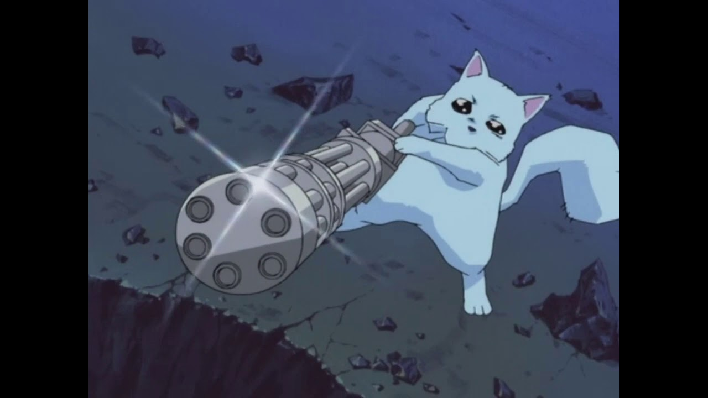

Cette oeuvre est un banger/20
Traitant des thématiques comme l'identité, les choix et bien d'autre ;
Tatami Galaxy est une oeuvre
culte qui mérite qu'on s'y attarde
Attention mattez en VF la VO est beaucoup trop rapide
Grand Blue est une oeuvre incontournable,
vous révez de plongée et "d'eau combustible" ?
Laissez vous tenter
Pensiez vous connaitre le sens d'être "trop stupide pour survivre" ?
Vous n'êtes pas prêt ;
laissez votre matière grise se déconnecter et profitez du voyage
Avez vous déjà eu l'impression que l'animation était de plus en plus lisse et politiquement correct
?
Excel Saga vous offre un saut dans le temps qui montre qu'à l'époque on avait des coui... parties
génitales

Bien que sortie récemment, Gnosia a su se démarquer avec sa forme atypique
Qui aurait cru qu'il était possible de mixer loup garou et voyage sapciale ?
Pour d'autres suggestions d'animés et manga de qualité, n'hésitez pas à consulter mon profil Anlist.co